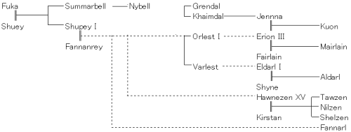
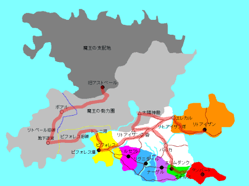

戻る
新米皇女の大冒険
(24) 新米皇女は愕然(終章・中編)
作：この市場
アストベール城の中は静かだった。クオンたちの足音以外、ほとんど何も聞こえない。モンスターたちも、まったく出てこない。まるで誰もいないようだ。
かつて栄華を誇ったであろう城の中も、今は朽ち果て、錆びつき、まるで廃墟の様相。魔王たちがここに住んでいるのではなかったのか？それにしては、あまりにも荒廃しすぎている。
クオンたちは、また5人に戻っていた。たくさんの仲間たちは、城の外でモンスターたちと戦い続けているはずだ。
歩く足元を見ると、すりきれた赤い絨毯の切れ端がところどころに残っているが、石でできた床には、ほこりが積もっていた。
「ようこそ。アストベールの城へ」
聞いたことがある声だった。
クオンたちの正面に4つの影が並んでいる。
クオンは剣を構え、ファナールは呪文を唱えるべく大きく息を吸い込んだ。
クオンは青い鎧に身を固め、ファナールはピンク色の裾の長いスカートに鮮やかな緑色のマントを付けている。
ニルゼンは風の矢を「風傑の弓」につがえ、アルダールは「炎帝の剣」を抜き放つ。
ニルゼンはオーソドックスな神官の装束で全身真っ白、アルダールは少しくすんだ赤色の女性用の鎧を着ていた。
ニルゼンがこういう普通の格好をしているのは、非常に珍しい。髪も少し短く切ったようだ。いつもこんな格好をしていれば、女の子にもてるだろうに。
あたりがぼうっと明るくなった。灯がともされたらしい。
そして、敵の姿が闇から浮かび上がった。
「水の魔女」ビスマ。「地の巨人」ゴウラ。「風の使者」ウェイルン。そして、もうひとり。
ウェイルンを見たクオンは、イヤなことを思い出してしまったらしく、ちょっと体を硬くする。
ニルゼンが、「風傑の弓」にかけていた手をちょっと外して、横にいたクオンの頭をぽんと叩いた。それだけで何も言わない。そしてふたたび風の矢をつがえる。
クオンは、ちらっとニルゼンの顔を見た。それに気付いたニルゼンは、ニッと笑ってウィンクしてみせる。
「さて」
ビスマが一歩前に進み出た。
「わたしたち3人は、あなたたちに負けた。だから今日は、四天王最後のひとりがお相手するわ」
「ならば、なぜそこにいるの？」
アルダールが尋ねる。
「『炎の魔人』君は、恥ずかしがりやさんだから、口上をかわりにやってあげてるだけのこと」
「は、恥ずかしがりやさん〜？」
確かに、四天王の4人目である｢炎の魔人」らしき少年は、無言でもじもじしている。顔も赤い。
「ダガ」
と「地の巨人」ゴウラが口上を引き継いだ。
「フラーファの力は、すごいゾ。しかも、容赦ないゾ。覚悟するンだナ」
しかし、この巨人、この城の中をどうやって動き回っているのだろうか？頭がつっかえないのだろうか？
「というわけで、がんばってください。そうそう、フラーファ君、ひとつだけお願いしてよいかな？」
と言ったのは「風の使者」ウェイルン。
「短い赤毛の方だけは、殺さないようにお願いしますよ。あとでぼくが、美味しくいただきますから。まだご経験もないようでしたし、さぞ美味しいでしょうねぇ」
間髪を入れず、ニルゼンはウェイルンに向って風の矢を放った。
ぶぅん！
うなりをあげた怒りの矢は、ウェイルンの足元に突き刺さり、床の石を砕いた。もちろん、わざとはずしたのだ。
「もう一度そういうことを言ってみろ！こんどは外しませんよ。姫の美しいおみ足の間にある秘密の部分に触れていいのは、わたっ」
どかっ！
セリフの途中で、クオンの回し蹴りがニルゼンを直撃していた。床にころがるニルゼン。
「バカっ！そんなところ、自分でさえ恐くてなかなかさわれないのに、人になんて、さわらせられるか！ボケっ！風呂の時とか、どれだけ苦労してると・・・」
そこまでまくしたててから、クオンははっと気が付いた。ひょっとして、かなり恥ずかしいセリフを大声でわめいていたのでは、と。
見る見る真っ赤になってしまうクオン。
「あらあら。その様子じゃあ、オトナのお楽しみも知らないようねぇ。お姉さんが教えてあげましょうか？」
ビスマがそう言って哄笑する。
「ホーホッホッホッホッ」
笑っているビスマに、フラーファが耳打ちした。
「え？口上はもういいから、あとは、ぼくにまかせろ？はいはい。わかったわよ」
ビスマ、ゴウラ、ウェイルンは、ゆっくり下がっていった。
フラーファと、クオンたち4人が向き合うかたちになる。ちなみにメアレインは後方に下がっているので、人数には入っていない。
炎と炎が激突する。炎と風がうずを巻く。炎が電撃を阻む。
フラーファは一歩も動かないまま、クオンたち4人と戦っていた。圧倒的な強さだ。クオンたちは善戦しているようには見えるが、このままの状態が続けば力尽きてしまうだろう。
目の前で繰り広げられる死闘を、メアレインはじっと見ていた。そして、何もできない自分が悔しくてしょうがなかった。
自分にできること。
「わたしにできること」
口に出してつぶやく。
「あなたにできること」
うしろから、そんな声がかぶさってきた。
メアレインは、その声の主をよく知っている。振りかえったメアレインの目に、水色の長い髪をなびかせた女神様の姿が映った。
「ナイベル様」
「あなたにできることは、ありますわ。前にもお話ししたでしょう？」
水の女神様は、そう言ってにこっと微笑んだ。
「でも・・・」
ためらうメアレイン。
「神の後継者は、神の血を引くもの。神の後を継いだら、最初のうちだけは人として、神の力を使うことができます」
「わかってます。わかってるんです。でも」
「メアレインさん、あなたは、私のおばあさんにあたるフューカの、直系の子孫ですよ？」
フューカは先々代の水の女神。当時の炎の勇者シューイと結婚し、サマーベルとシュペーを生んだ。サマーベルはナイベルの母であり、シュペーは初代皇帝シュペー1世。エリオン3世の実の娘であるメアレインは、フューカの直系の子孫にあたるのだ。フューカもサマーベルも、水の女神を継いだ後、しばらくは人間として戦いに参加していた。本来は「神は人間の戦いに介入してはならない」という鉄則があるのだが、人が神となってしばらくは、人のために神の力を使うことが黙認されていた。シュペー1世の魔導帝国打倒も、姉であるサマーベルが「水神の杖」をもって戦いを助けたからこそなのだ。しかし、ナイベルが女神となってから、もう長い年月がたっている。ナイベル自身では、もはや人を救うことはできない。
「わたくしには、子供はいません。ですから、いちばん近い子孫であるクオン様とあなたのどちらかが、わたしの後継者になることができます」
ナイベルが、諭すように語る。
「わかって・・・います」
「だったらどうして・・・？」
メアレインを見つめるナイベル。メアレインは思わず目をそらせ、しぼりだすように言葉を吐く。
「でも、そうなったら、わたしがクオン姫様の妹だって、わかってしまいます。わたしたちの生まれた日、ちょっとしかズレてないんですよ？王妃様一筋だったはずの皇帝陛下が、ふたりの女性を同時に愛してたことが、姫様にバレてしまうじゃないですか！そんなの・・・。そんなのイヤですっ！！」
声が大きくなってしまい、クオンに聞こえなかったか、思わず後ろを振りかえってしまうメアレイン。
その目に飛び込んできたのは、クオンがガクっと膝をついた場面だった。ひたすらフラーファの炎を避けて駆け回り続けていたので、さすがに疲れてきたのだ。
「姫様っ」
メアレインは、きゅっと唇を噛んだ。
大切な姫様を守らなければならない。そのために。
それが、たとえ姫様の心を傷つけることになっても。
「はぁっ、はぁっ。はぁっ」
クオンは肩で息をしていた。さすがに苦しい。かなりの時間、攻撃を続けているが、フラーファにはほとんど傷すら負わせることができない。
「くそぉ」
それでもクオンは、フラーファをにらみつける。「炎の魔人」は涼しい顔のまま、自由に炎を操って、クオンたちの攻撃を防御しながら攻撃を繰り出している。
ブァッ！
クオンは飛んできた炎を避けようとしたが、足が重く、思うように動かない。やむなく剣を盾がわりにかざす。クオンの腕力では片手用の剣を両手で持つのが精いっぱいで、盾を持つ余裕はないのだ。
今にも炎がクオンを焼こうとした瞬間、クオンの前に水の壁があらわれた。
薄い壁だったが、それはフラーファの炎をあっさりとさえぎった。
「た、たすかった」
てっきりファナールの魔法かと思ったのだが、ファナールにはそんな余裕はなさそうだった。
では、誰が？
そこに、ゆっくりと歩いてくる人影。フラーファも攻撃をやめて、その人物を値踏みするように見ている。
この場に似合わないメイド服に、美しい赤く長い髪。その手には、大きな杖が握られていた。杖の先端は、大きな丸い渦のようなかたちをしている。
そして、頭の上には、光る三日月が浮かんでいた。
見ている間に、赤い髪が光りながら水色に変わっていく。
「メア？」
「姫様。わたしも戦います。あたらしい『水の女神』として、この『水神の杖』を使って」
メアレインは、きっぱりと決意を告げた。
そのうしろで、ナイベルがにこにこ笑顔で手を振っていた。神の継承が終わったのだ。
「メアは、ぼくの妹だったのか」
メアレインの説明で、クオンは真実を知った。
「いつか、皇帝の末裔に皇女が生まれる。皇帝の末裔に初めてあらわれる皇女は、白き光をまとい、自らの命と引き換えに、世界の安らぎを得るだろう」
バルトウィックの予言。ならば、メアレインこそが、その「白き光の皇女」なのではないか？
「それは違います」
クオンの考えを否定したのはナイベルだった。
「クオン様は、お母様のお腹の中では女の子だったのです。ですから本来、予言に該当するのはクオン様のはずだったのです。でも、予言の『白き光の皇女』は、世界の平和と引き換えに命を落とすことになっています。皇帝陛下は・・・」
ナイベルがそこまで話したところで、ナイベルのうしろに新たな人影があらわれた。
輝く騎士の甲冑を付けた、皇帝エリオン3世である。声もなく驚く一同。
「私の責任だ。私が話そう。そこの4人も一緒にどうかね。聞かせてあげるよ」
皇帝陛下は魔王の四天王たちに、そう声をかけた。彼らも互いに顔を見合わせた後、まぁともかく聞いてみるか、という結論になったらしく、こちらに歩み寄って来る。
「・・・ということです。大魔法使いセガルスに、ジェンナのお腹の中の子は娘だと教えられたとき、私は驚いた。いくら世界の平和と引き換えとはいえ、可愛い娘が死んでしまうなんて、認めたくなかった。だから、セガルスに頼んで、腹の中の子を男の子に変えたんだ。しかし、そのすぐ後にメアレインが生まれた。やはり犠牲になるのは私の娘なのか。これは運命なのか。だが、私はあきらめなかった。メアレインが私の娘だと知るものは少ない。だから、メアレインを皇女としない。つまり侍女としてしまうという作戦を思いついた。これで私の娘たちは、予言の犠牲になることはないはず。『皇帝の末裔に初めてあらわれる皇女』は存在しないのだから」
皇帝の長〜い説明に、
「なるほどねぇ」
と感心しているのはビスマ。
「わたしもゴウラもウェイルンも、ちゃんとビンゴってたのね」
彼ら四天王は、「白き光の皇女」となり得る少女、「地・水・火・風すべての加護を受けた赤毛の娘」を探し出しすことを、魔王に命じられていた。そして、3人とも、いったんはクオンの捕獲に成功していたのだ。
「ぼくは気がついてなかったけどね。ただ、可愛いなって思っただけで。あっはっはっは」
悪びれずに笑うウェイルン。
「ぼくが・・・元から女の子だった・・・って？」
クオンは愕然としている。頭の中でアイデンティティが崩壊しかけているらしい。
「なによ？フラーファ？」
フラーファがミルバの袖をくいくいと引くので、ミルバはフラーファの口に耳を近づけた。
「もうぼくたちの出番じゃない？あとは魔王様にまかせよう、ですって？う〜ん」
「そういうことダナ。決着は、魔王様におまかせするゾ」
ゴウラが賛成する。
「賛成です。どうなるかわかりませんが、魔王様の出番でしょう」
と、ウェイルンも賛同した。
ビスマは、それを受けて、皇帝陛下を見る。他の四天王も同じく、皇帝陛下を見つめた。
「魔王様をお呼びしても、かまいませんか？魔王様の娘婿であられるエリオン様？」
エリオン3世は苦い顔をした。
「ありゃ。君たち知ってたんだ？」
このやり取りに、クオンたちが硬直していたのは言うまでもない。
最初に沈黙を破ったのは、メアレインだった。
「陛下？」
「おお！愛しき我が娘よ！お父様と呼んでおくれ！」
メアレインは苦笑して言い直す。
「では、お父様。それはどういうことですの？」
ちょっと口調にトゲがあるように聞こえるのは、気のせいばかりではないだろう。
しかたないなぁ、という表情で皇帝は答える。
「クオンの母、亡きわが妃ジェンナは、『北の魔王』カイムダルの一人娘だったんだ。私と結婚するために家出して来たのさ」
またややこしいことになってきた。クオンは、魔王の孫娘だというのだ。
「わたしたちも、さっき魔王様に聞いて驚いたわ」
ビスマたちも、「白き光の皇女」になり得る「地・水・火・風すべての加護を受けた赤毛の娘」を探せと命じられていただけで、それが魔王の孫娘とは知らなかった。もし知っていれば、あんな乱暴な探し方はしなかっただろう。
クオンは赤毛の少女。そして、「大地の鈴」「水神の杖」「炎帝の剣」「風傑の弓」を持つ仲間に守られている。魔王が言う条件に、ぴったりあてはまる。
沈黙が訪れた。長い沈黙が。
そして、その沈黙を破ったのは、城の中すべての響き渡るような巨大な声だった。
「よぉく来たぁ！今こそすべてを滅ぼし、余が世界の帝王となるぅ！」
あたりが漆黒の闇に包まれた。
闇の中から、なにかがにじみ出てくる。
それは、人のかたちをしながら、背中に黒い巨大な8枚の羽を持った何者かであった。
「余が全世界をすべる者、『魔王』である」
人であれば30歳前後の男性だ。美男子と言っていい。灰色の瞳が冷たく光り、長く白い髪が腰のあたりまで届いている。体を黒いマントで覆っているので、体格はよくわからない。
ビスマたち四天王は、その場にひざまずいた。
「あれ？」
不思議そうな声を出したのは、エリオン3世。
「お義父上。右目の下にあったほくろが、左目の下に移ってますねぇ。なんとも、魔人という種族は器用なことで」
さりげない指摘だった。しかし、
「な・・・に？」
ビスマが、すぐに反応した。
下げていた頭をあげて、魔王の顔を見つめる。
「ビスマ！無礼であろう！」
魔王が、手で顔をおおう。しかし、すぐにビスマの表情が変わった。
「た、たしかに・・・これは魔王様ではないっ！」
あえぐように言うビスマ。ゴウラやウェイルンたちも、あわてて魔王の顔を見る。
四天王は立ちあがった。そして4人が一斉に動く。
ビスマからは水の渦を叩きつけ、ゴウラはパンチを見舞い、ウェイルンは突風を巻き起こす。そして、フラーファの炎の矢が魔王に突き立つ。
「魔王様の姿をしたキサマ！何者だ！」
有無を言わせず全員1回ずつの先制攻撃を食らわせた後で、ビスマが叫ぶ。乱暴なやり方だ。確認してから攻撃すればいいのに。
四天王の攻撃にびくともせず、「魔王」はにやりと笑った。
「まさかこんなに簡単にバレるとはなぁ。余は『異界の魔王』グレンダル。カイムダルのような使えぬ弟、余が食い殺してくれたわ！わっはっはっはっ」
哄笑する魔王。
「なっ・・・」
絶句するビスマ。
「・・・許せませんね。こういうことは、絶対に許してはいけません」
ウェイルンも、怒りに震えている。
フラーファが、ビスマの耳に何かをささやいた。
「え？なに？やっつけてしまおうって？」
「同感ダ」
ゴウラも同意する。
「というわけだけど、どうする？あなたたち」
ビスマがクオンたちに聞いてくる。一緒に戦わないかと言っているのだ。
しかし肝心のクオンは・・・
重なる疲労に加えて、大きなショック。ふらっとよろめくと、そのまま意識を失ってしまったのだ。
「姫っ！」
あわててクオンを支えるニルゼン。
「わはははははは」
大声で笑いながら、魔王グレンダルは攻撃を開始した。
ズーーーーーン！！！
空間を揺るがす衝撃波。床の石が飛び散る。しかし、クオンの前にはゴウラの巨体が立ちふさがっていた。
「無事ダナ？姫サマ」
くぐもったゴウラの声。見ると、ゴウラの体にはいくつものヒビが入っている。クオンは大切な主君の孫娘。自分の身を呈してでも守らなければならない、と判断したのだ。
ズーン！ズーン！！ズーン！！！
たて続けに衝撃波が来る。魔王は、まだ笑いつづけたまま。
「フラーファ、炎をください。風で叩きつけましょう」
フラーファはウェイルンの提案にうなずき、炎を巻き起こす。それをウェイルンが風の中に巻き込み、ドリルのような形で魔王に叩きつけた。
「ふふふふふ。なにやらちょっと、こそばゆかったなぁ！」
あざけり笑うグレンダル。
「ファナールさん、『大地の鈴』を！」
メアレインがファナールに指示する。ここは正念場。秘密兵器を出すべきだと考えたのだ。
「うん。わかった」
「大地の鈴」を右手で捧げるファナール。
「リン」
鈴の音が響き渡った。
空気が止まった。音が止まった。
魔王の時間が止まった。皇帝も固まってしまっている。しかしクオンたちの動きが止まることはなかった。そして、なぜか四天王たちも。
「どうして、あんたたちまで・・・？」
不思議がるファナール。最初に「大地の鈴」を使ったとき、ウェイルンは動けなくなっていたはず。
「わたしたちも今は、地水火風の加護を受けてるってことなんでしょうね。どうしてかはわからないけど」
ビスマがそう答える。
「さぁ、魔王が動きを止めているうちよ。みんなで行きましょう！」
と言いながら、アルダールは「炎帝の剣」をかまえた。
ニルゼンはちょっとためらったが、気を失ったままのクオンを床にそっと寝かせた。クオンは特殊な力も武器も持たないので、このメンバーの中では戦闘力はダントツで低い。いなくても、正直なところ、ほとんど影響はないのだ。ナイベルが「まかせて」という表情でニルゼンにウィンクする。
そして、四天王とニルゼンたち、合計8人の総攻撃が、動けない魔王に対して始まった。
◇◇◇続く◇◇◇
参考資料1◆関連系図

参考資料2◆大陸地図およびクオンたちの行程

おまけ◆クオンのあくび(笑)
戻る
□ 感想はこちらに □